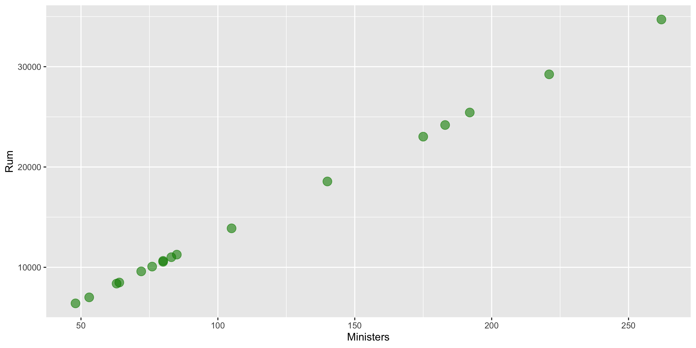

Data Collection
Grayson White
Math 141
Week 3 | Fall 2025
Goals for Today
- Finish up data collection ideas
- Discuss drawing conclusions from our sample and types of studies
Data Collection
Who are the data supposed to represent?

Who are the data supposed to represent?
Key questions:
- What evidence is there that the respondents are representative of the population?
- Who is present? Who is absent?
- Who is overrepresented? Who is underrepresented?
Nonresponse bias

Nonresponse bias: The respondents are systematically different from the non-respondents for the variables of interest.
Come Back to Literary Digest Example
Of the 10 million people surveyed, more than 2.4 million responded with 57% indicating that they would vote for Republican Alf Landon in the upcoming presidential election instead of the current President Franklin Delano Roosevelt.
Non-response bias?
Tackling Nonresponse bias
Use multiple modes (mail, phone, in-person) and multiple attempts for reaching sampled cases.
Explore key demographic variables to see how respondents and non-respondents vary.
Take a survey stats course to learn how to create survey weights to adjust for potential nonresponse bias.
Is Bigger Always Better?
For our Literary Digest Example, Gallup predicted Roosevelt would win based on a survey of 50,000 people (instead of 2.4 million).
Big Data Paradox
“Without taking data quality into account, population inferences with Big Data are subject to a Big Data Paradox: the more the data, the surer we fool ourselves.” – Xiao-Li Meng
Example:
During Spring of 2021, Delphi-Facebook estimated vaccine uptake at 70% and U.S. Census estimated it at 67%.
The CDC reported it to be 53%.
And, once we learn about quantifying uncertainty, we will see that large sample sizes produce very small measures of uncertainty.
Big Data Paradox
“If you have the resources, invest in data quality far more than you invest in data quantity. Bad-quality data is essentially wiping out the power you think you have. That’s always been a problem, but it’s magnified now because we have big data.” – Xiao-Li Meng
Thoughts on Sampling
Random sampling is important to ensure the sample is representative of the population.
- Word we will use: generalizability
Representativeness isn’t about size.
- Small random samples will tend to be more representative than large non-random samples.
However, I bet most samples you will encounter won’t have arisen from a random mechanism.
How do we draw conclusions about the population from non-random samples?
- Determine if your sampled cases (and respondents) are systematically different from the non-sampled cases (and non-respondents) for the variables you care about.
- Adjust your population of interest.
Now let’s shift our discussion to the conclusions we can draw from the sample we have.
Typical Analysis Goals
Descriptive: Want to estimate quantities related to the population.
→ How many trees are in Alaska?
Predictive: Want to predict the value of a variable.
→ Can I use remotely sensed data to predict forest types in Alaska?
Causal: Want to determine if changes in a variable cause changes in another variable.
→ Are insects causing the increased mortality rates for pinyon-juniper woodlands?
Typical Analysis Goals
For these goals will differentiate between the roles of the variables:
Response variable: Variable I want to better understand
Explanatory/predictor variables: Variables I think might explain/predict the response variable
→ How many trees are in Alaska?
→ Can I use remotely sensed data to predict forest types in Alaska?
→ Are insects causing the increased mortality rates for pinyon-juniper woodlands?
Key Mechanism for Causal Goal
Random assignment: Cases are randomly assigned to categories of the explanatory variable
- If the data were collected using random assignment, then can determine if the explanatory variable causes changes in the response variable.
Example: COVID Vaccine Trials
To study the effectiveness of the Moderna vaccine (mRNA-1273), researchers carried out a study on over 30,000 adult volunteers with no known previous COVID-19 infection. Volunteers were randomly assigned to either receive two doses of the vaccine or two shots of saline. The incidence of symptomatic COVID-19 was 94% lower in those who received the vaccine than those who did not.
Question: Why does random assignment allow us to conclude that this vaccine was effective at preventing (early strains of) COVID-19?
Careful with Non-Random Assignment Data
We have data on the number of Methodist ministers in New England and the number of barrels of rum imported into Boston each year. The data range from 1860 to 1940.
- Should we conclude that ministers drink a lot of rum? Or maybe that rum drinking encourages church attendance?
Confounding variable: A third variable that is associated with both the explanatory variable and the response variable.
Unclear if the explanatory variable or the confounder (or some other variable) is causing changes in the response.
Causal Inference
- Spurious relationship: Two variables are associated but not causally related
- In the age of big data, lots of good examples out there.
→ “Correlation does not imply causation.”
→ “Correlation does not imply not causation.”
- Causal inference: Methods for finding causal relationships even when the data were collected without random assignment.
- We are lucky to have two causal inference experts in our department!
- Lenny Wainstein and Megan Ayers (joining this spring) do research on causal inference.
Types of Studies
Observational Studies
A study in which the researchers don’t actively control the value of any variable, but simply observe the values as they naturally exist.
Example: Hand washing study
- To estimate what percent of people in the US wash their hands after using a public restroom, researchers pretended to comb their hair while observing 6000 people in public restrooms throughout the United States. They found that 85% of the people who were observed washed their hands after going to the bathroom.
(Randomized) Experiment
A study in which the researcher actively controls one or more of the explanatory variables through random assignment.
Example: COVID Trial
Common features:
- Control group that gets no treatment or a standard treatment
- Placebo: A fake treatment to control for the placebo effect where if people believe they are receiving a treatment, they may experience the desired effect regardless of whether the treatment is any good.
- Blinding: When the subjects and/or researchers don’t know the explanatory group assignments.
Thoughts on Data Collection Goals
Random assignment allows you to explore causal relationships between your explanatory variables and the predictor variables because the randomization makes the explanatory groups roughly similar.
How do we draw causal conclusions from studies without random assignment?
- With extreme care! Try to control for all possible confounding variables.
- Discuss the associations/correlations you found. Use domain knowledge to address potentially causal links.
- Take more stats to learn more about causal inference.
But also consider the goals of your analysis. Often the research question isn’t causal.
Bottom Line: We often have to use imperfect data to make decisions.